Полевой учёт утечек газа: регистрация, повторные обходы, карта и отчёты. Приложение работает полностью офлайн — данные и фотографии остаются на телефоне.
Leak Tracker для Android — обычное приложение, устанавливаемое из APK-файла. Магазина приложений и учётной записи не требуется.
| Версия Android | 13 и новее (API 33) |
|---|---|
| Оборудование | камера и приёмник GPS — для фотографий и координат |
| Интернет | не требуется; сеть нужна только для загрузки карты в офлайн-кэш |
| Место | зависит от числа фотографий: каждая запись хранит до трёх снимков плюс по снимку на каждую проверку |
Перед установкой APK разрешите в системе установку из этого источника — Android спросит об этом сам при первом открытии файла. После установки приложение появится в списке под именем Leak Tracker.
Проект — это отдельный журнал: свои утечки, свои фотографии, свои настройки и своя папка на телефоне. При первом запуске приложение предлагает создать первый проект.
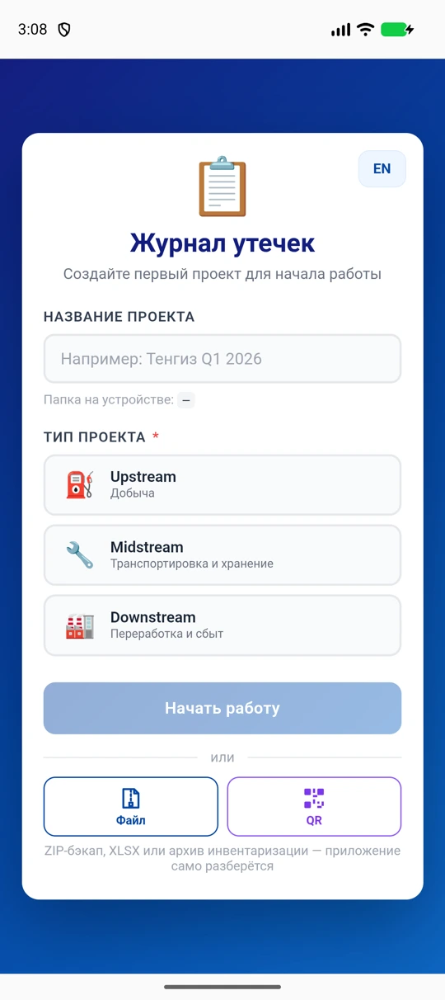
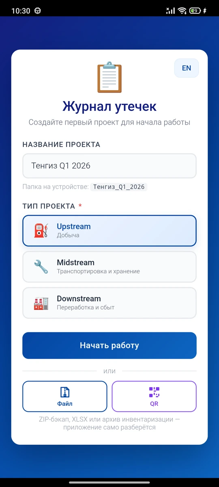
| Тип | Назначение | Уровни локации |
|---|---|---|
| Upstream | Добыча | Подразделение → Месторождение → Локация |
| Midstream | Транспортировка и хранение | УМГ → Станция → Локация |
| Downstream | Переработка и сбыт | Район → Населённый пункт → Адрес |
Вместо пустого проекта на этом же экране можно принять готовый: ZIP — резервная копия, QR — база с соседнего телефона, Excel — таблица с фотографиями. Кнопка QR есть только в Android-версии.
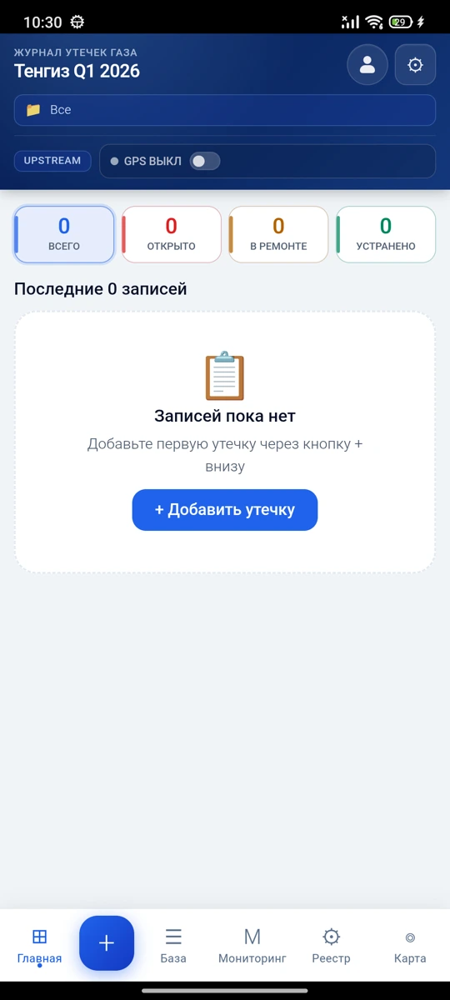
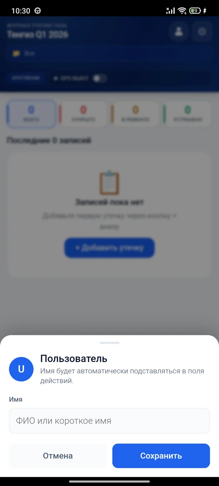
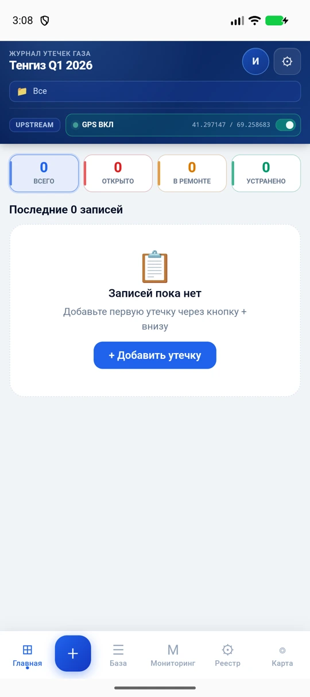
Имя из профиля автоматически подставляется во все действия: кто зарегистрировал утечку, кто взял её в ремонт, кто провёл проверку при обходе. Профиль открывается кружком с инициалом в шапке.
Переключатель GPS в шапке включает приёмник. Когда координаты получены, они показываются рядом с переключателем и записываются в каждую новую утечку. При первом включении Android спрашивает разрешение на доступ к местоположению — без него координат не будет.
Кнопка + внизу экрана открывает форму. Форма трёхшаговая, номер шага виден в шапке.
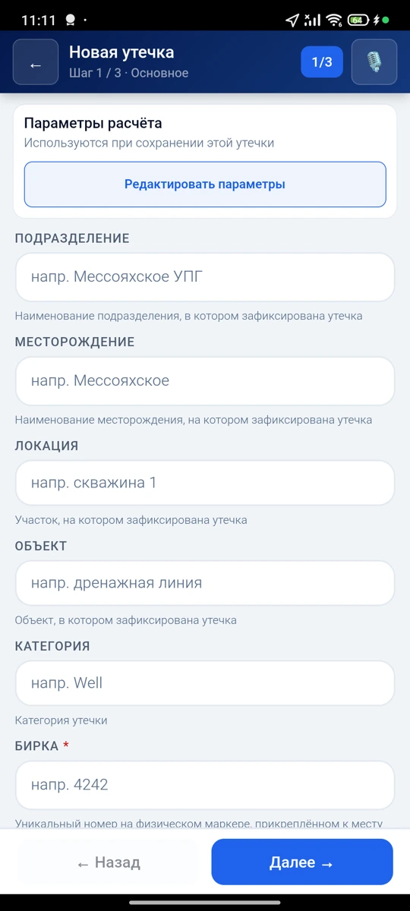
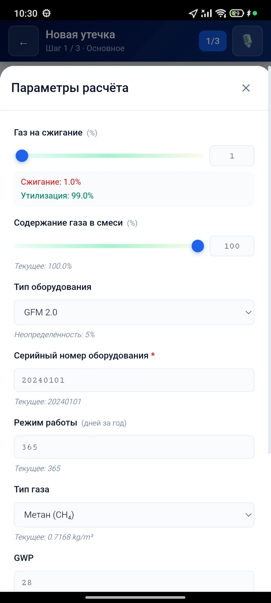
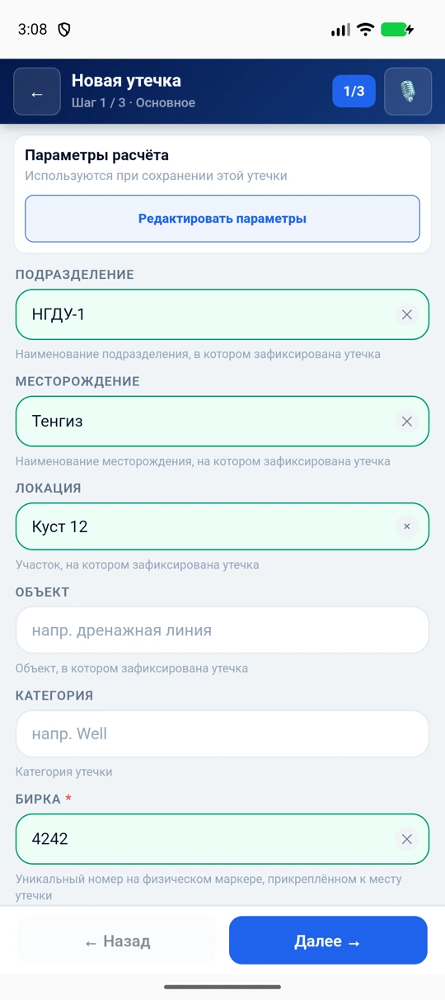
Место (три уровня локации), объект, категория, бирка, компонент, номер видео, давление, температура и измеренная скорость утечки. Большинство полей подсказывают значения из справочника и из ранее введённых записей.
Кнопка «Редактировать параметры» открывает параметры расчёта: тип оборудования, серийный номер прибора, погрешность, тип газа, плотность, доли газа на сжигание и утилизацию, режим работы. По ним считаются потери и выбросы.
Кнопка микрофона в шапке формы включает голосовой ввод: сказанное раскладывается по полям, а перед применением показывается окно подтверждения. Android при первом использовании спросит разрешение на запись звука.
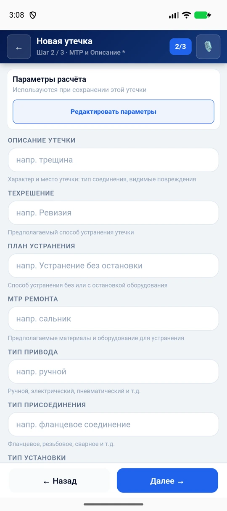
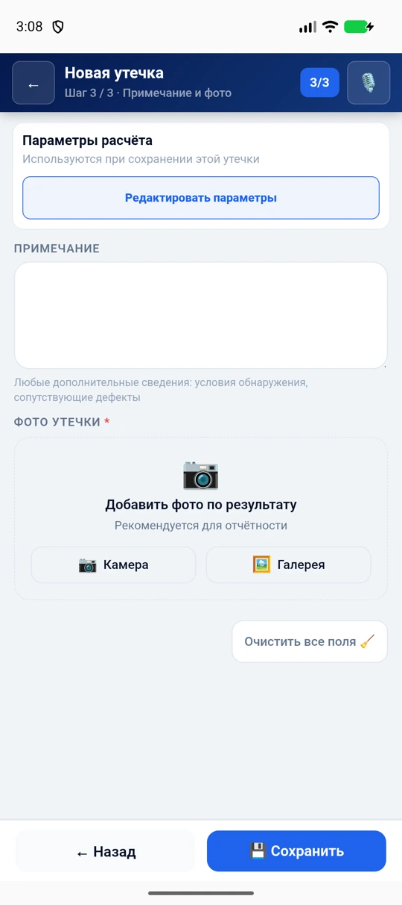
Описание утечки, техническое решение, план устранения, МТР ремонта, тип привода, тип присоединения и тип установки — все поля со списками готовых формулировок.
На Android снимок делается прямо из приложения: «Камера» открывает камеру телефона, «Галерея» — выбор готового файла. Это отличие от веб-версии, где вместо них выбор файла в браузере. Обязательность фотографии настраивается в настройках проекта.
Кнопка «Сохранить» записывает утечку и показывает экран подтверждения. Незаконченная форма не теряется: при следующем открытии появляется баннер «Есть незаконченная запись» с выбором «Восстановить» или «Удалить».
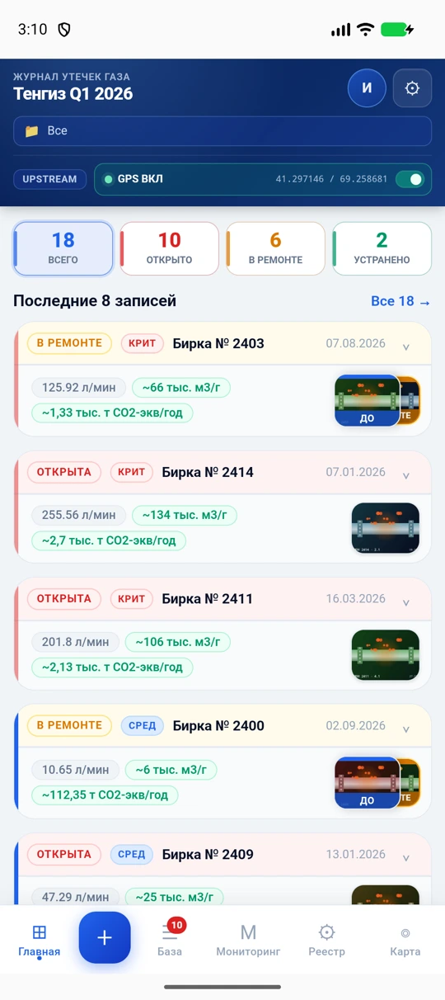
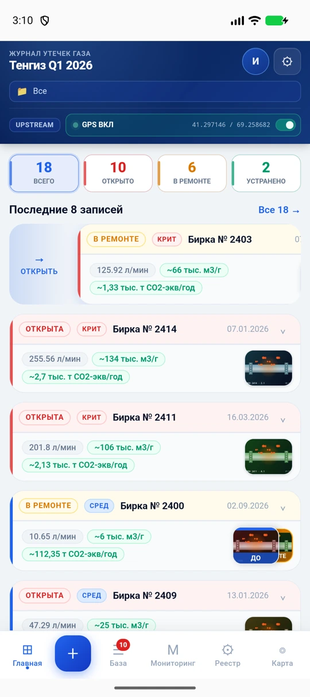
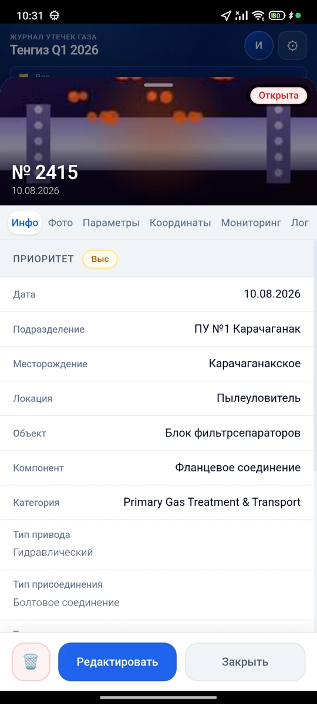
Плитки «Всего», «Открыто», «В ремонте», «Устранено» — это ещё и фильтр: нажатие оставляет в списке записи одного статуса, повторное нажатие снимает фильтр.
Свайп вправо по карточке открывает подробную карточку, свайп влево — смену статуса (на экране «Мониторинг» — запись проверки). Стрелка в углу карточки разворачивает и сворачивает подробности.
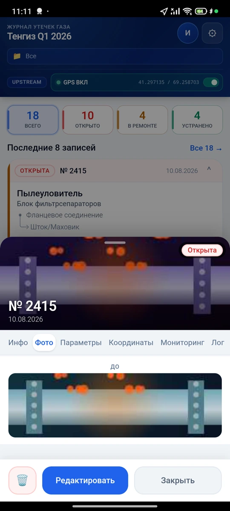
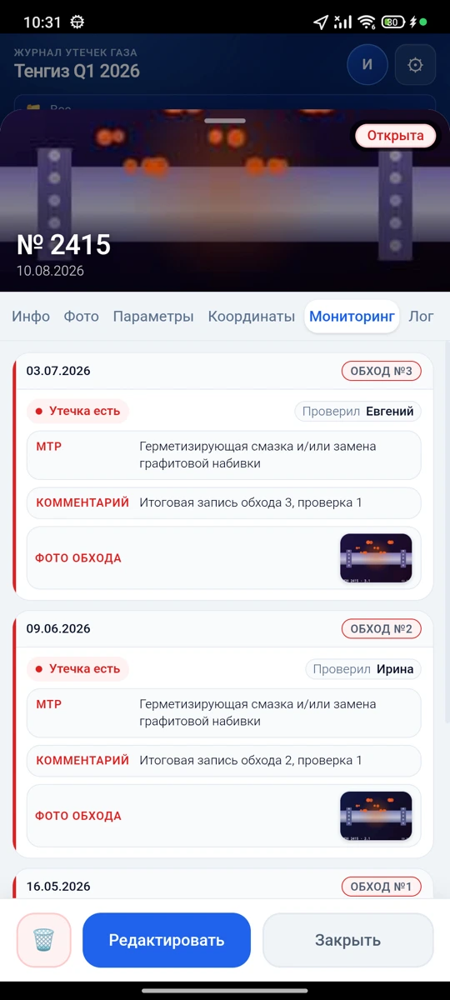
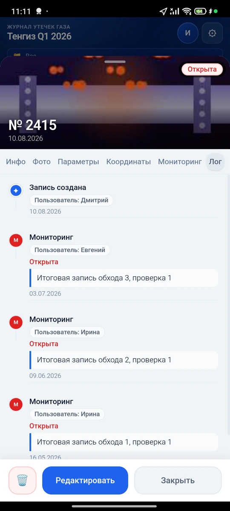
| Вкладка | Содержимое |
|---|---|
| Инфо | приоритет, дата, место, объект, описание |
| Фото | снимки до, во время ремонта и после; открываются на весь экран |
| Параметры | замеры и расчёт: потери метана, выбросы CO₂-эквивалента |
| Координаты | широта и долгота |
| Мониторинг | проверки по обходам: результат, исполнитель, МТР, фото |
| Лог | создание, смены статуса, правки, комментарии |
Внизу карточки — «Редактировать» (правка полей с записью в лог), «Закрыть» и корзина (удаление с подтверждением).
Утечка живёт по замкнутому циклу:
Открыта → В ремонте → Устранена → (переоткрытие) → Открыта
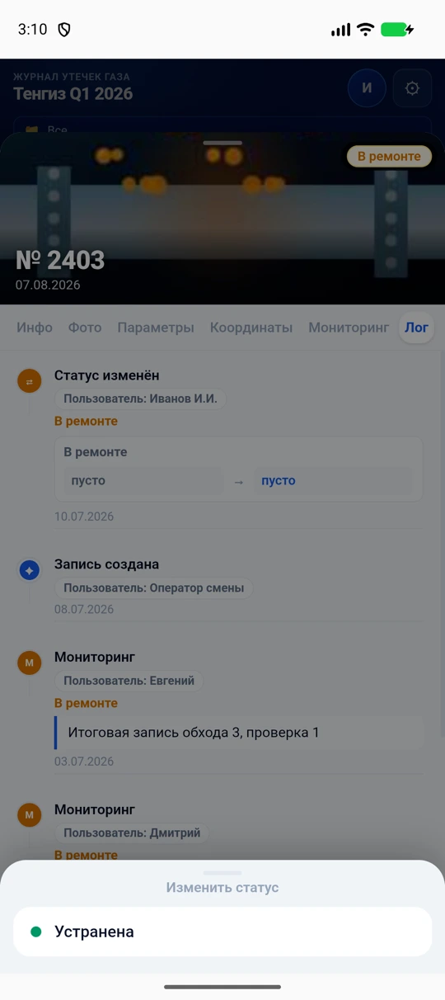
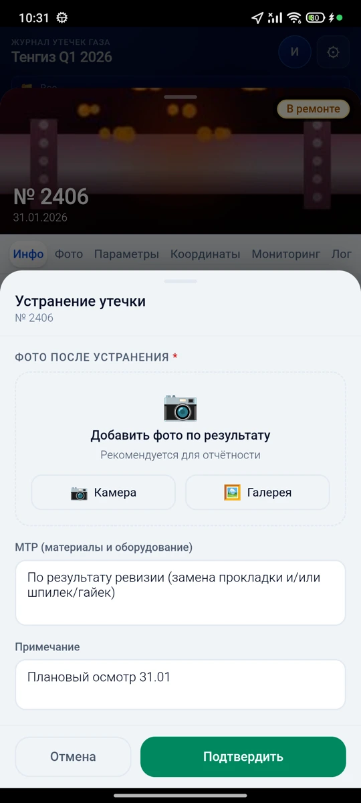
Каждое действие попадает в лог утечки вместе с именем пользователя и временем.
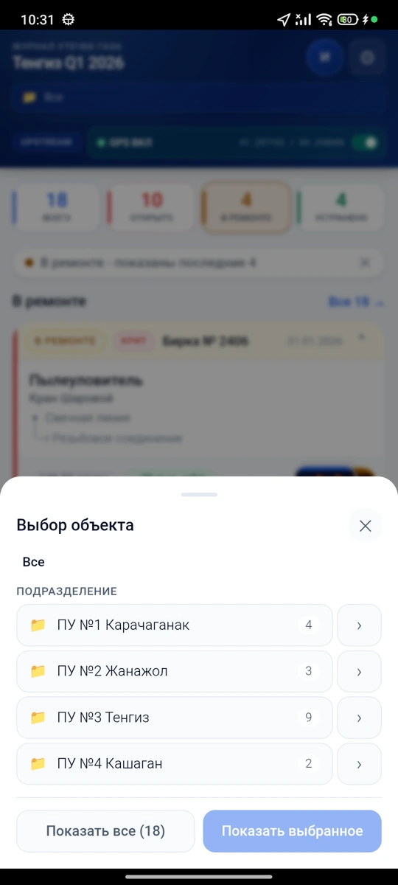
Кнопка с текущим путём в шапке открывает навигацию по локациям — как по папкам в проводнике, с числом записей в каждой: на главной, в базе и на карте с утечками это утечки, в реестре и на карте с железом — компоненты. Выбранная область действует на все экраны сразу: базу, карту, мониторинг, статистику на главной и счётчик на кнопке «База». Кнопка «Показать все» возвращает весь проект.
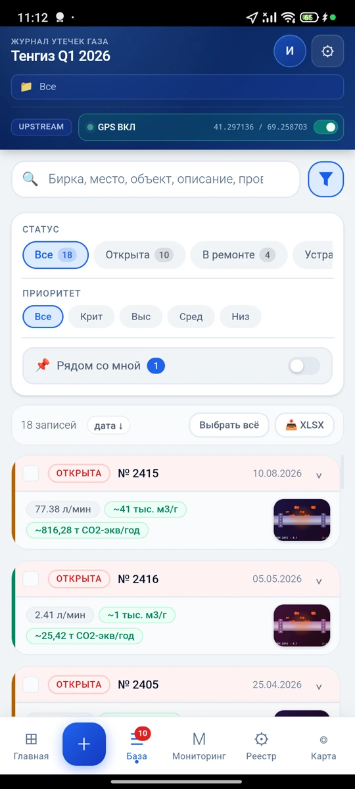
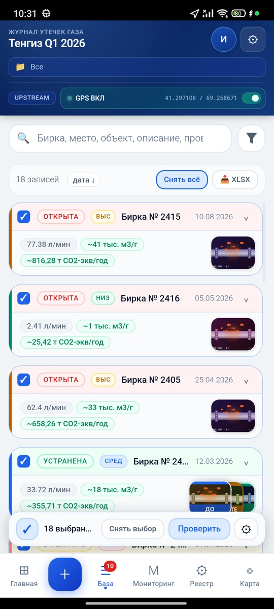
photos/ нужно переносить одним комплектом.
Мониторинг — это повторные проверки уже зарегистрированных утечек. Проверки объединяются в обходы, каждый со своим номером.
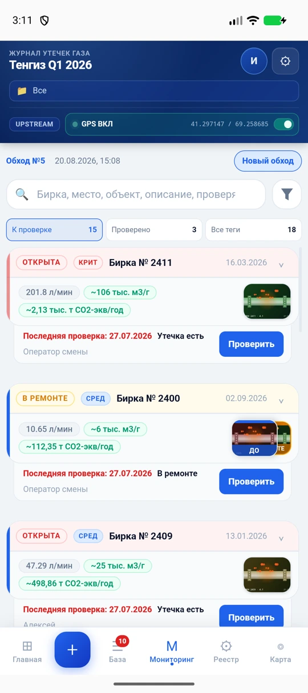
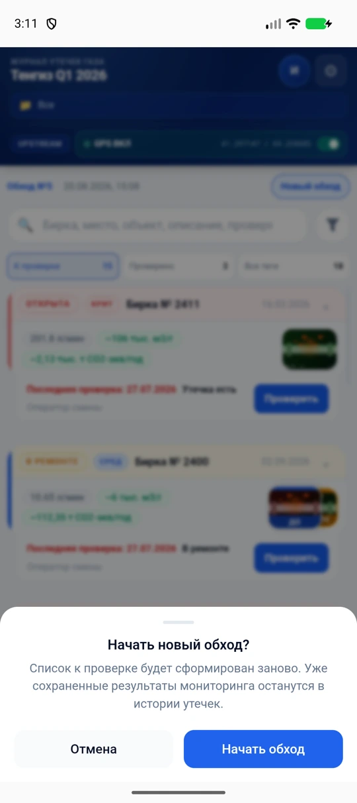
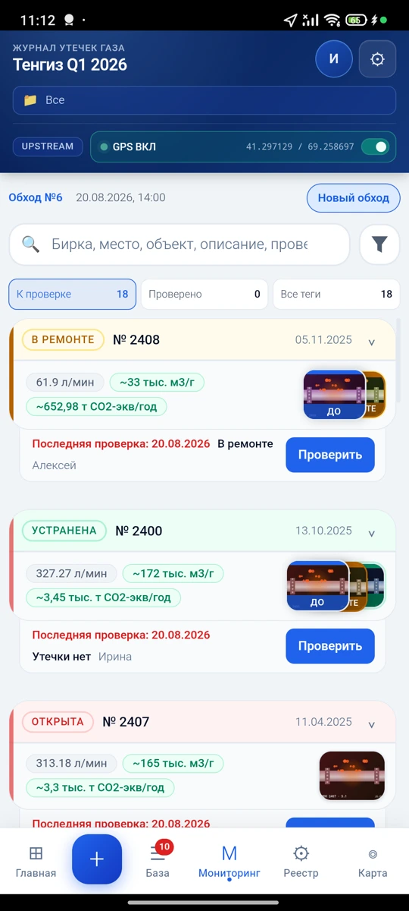
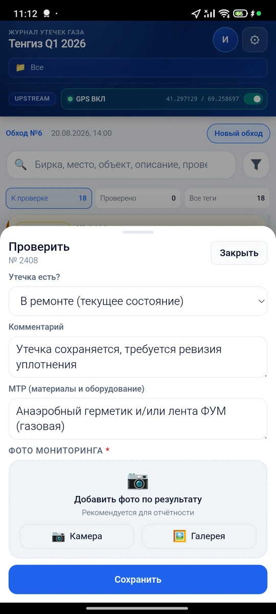
Если активного обхода нет, экран предлагает «Начать мониторинг»; если обход уже идёт — кнопка называется «Новый обход». В обоих случаях список к проверке формируется заново, а сохранённые результаты остаются в истории утечек.
Три фильтра — «К проверке», «Проверено», «Все теги» — показывают количество в каждой группе. На карточке видно дату последней проверки, её результат и исполнителя.
Кнопка «Проверить» (или свайп влево по карточке) открывает окно проверки: текущее состояние утечки, МТР, комментарий и отдельное фото мониторинга. После сохранения тег переезжает в «Проверено», а свежий снимок становится миниатюрой карточки. Когда проверены все теги, появляется «Завершить обход».
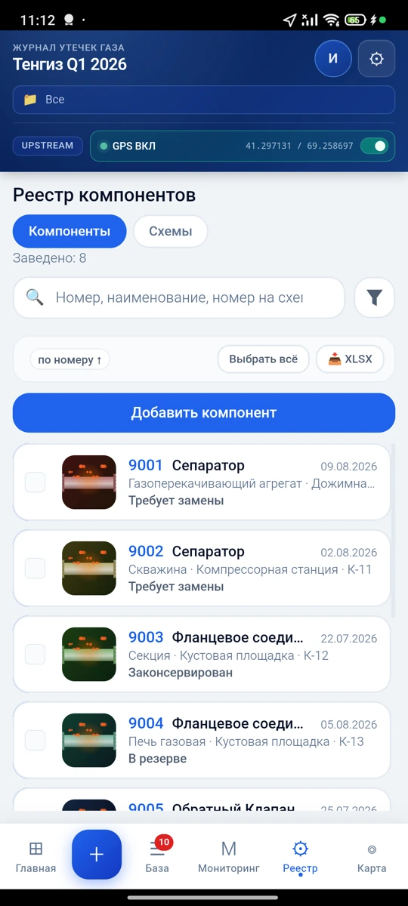
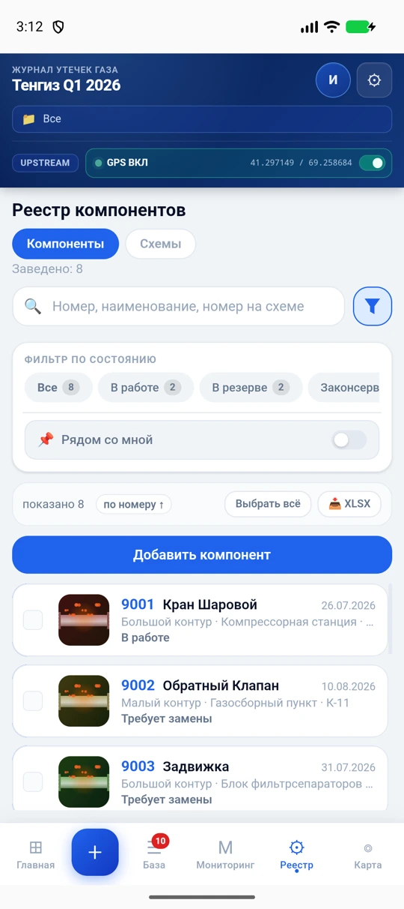
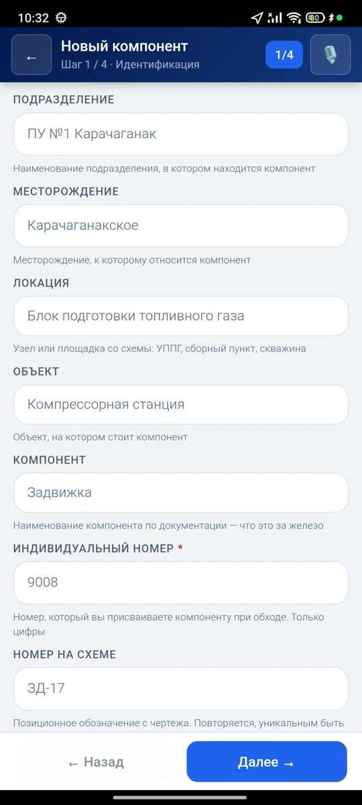
Реестр — отдельный учёт от журнала утечек. Компонент — постоянный объект: задвижка, кран, манометр. Утечка — событие на нём. Сколько железа на месторождении, заранее не знает никто, поэтому реестр не выгружается откуда-то готовым, а рождается в поле: обходчик находит оборудование, присваивает ему номер, заполняет карточку и фотографирует.
Вкладка «Реестр» появляется там, где реестр объявлен; сейчас он объявлен у всех трёх типов проекта. Рядом с компонентами лежит вкладка «Схемы»: технологические чертежи, приложенные к проекту.
| Индивидуальный номер | цифры, которые присваивает обходчик и вешает на бирку. По нему карточку ищут и по нему сводят данные с других устройств. |
|---|---|
| Номер на схеме |
метка с чертежа: ЗД-32, PG-12. Повторяется
сколько угодно раз — на одном чертеже таких меток десятки.
|
Заполняется в четыре шага: идентификация, параметры, паспорт, фото. Обязательны только индивидуальный номер и снимок — остальное дописывается по мере того, как удаётся разобрать таблички. Координаты снимаются с приёмника в момент открытия карточки, спрашивать их не нужно.
Свайп влево по карточке (или «Сменить статус» для отмеченных) открывает выбор состояния: в работе, в резерве, законсервирован, требует замены, выведен из эксплуатации, демонтирован. То, что стоит сейчас, помечено словом «сейчас». Это не жизненный цикл: компонент не движется от «открыт» к «устранён», как утечка, — он просто находится в одном из состояний, когда на него посмотрели. Отдельного «без изменений» в списке нет и не нужно: если ничего не поменялось, выбирается то же состояние, что стоит сейчас. Любой выбор отмечает, что железо осматривали, — и это доказательство, что обход сюда дошёл.
Кнопка XLSX на экране реестра собирает архив инвентаризации: книгу, папку снимков и технологические схемы. Он уходит отдельно от отчёта по утечкам, потому что и получатели разные — инвентаризацию ждёт владелец оборудования, отчёт по утечкам — тот, кто считает выбросы.
Обратно такой архив принимает общая кнопка «Импорт» в настройках. Книгу можно править в Excel: исправленные ячейки ложатся правками поверх карточки — пустая ячейка ничего не стирает, а история осмотров и снимок остаются на месте. Карточка, заполненная на площадке, при этом важнее строки в таблице: если такой номер уже заведён на телефоне, строка не вливается, и о таких строках приложение сообщает отдельно.
На первом шаге формы утечки есть кнопка «Выбрать из реестра». Она показывает заведённые карточки ближними сверху, с расстоянием до каждой, и поиском по номеру или наименованию. Выбранная карточка сама проставит наименование, тип привода, присоединение и исполнение — переписывать это с бирки второй раз не нужно.
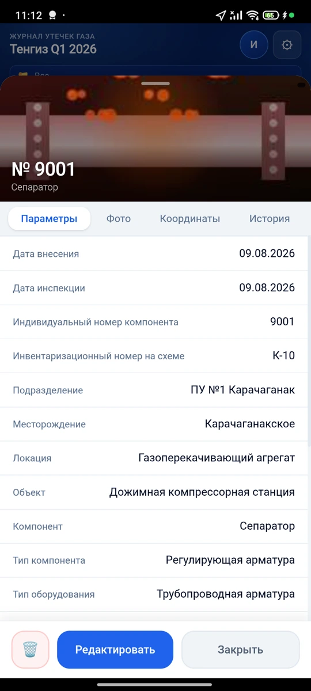
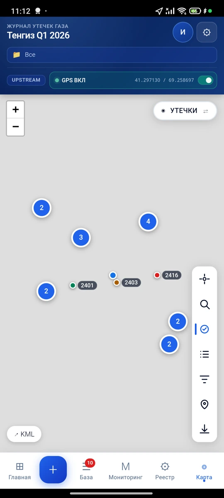
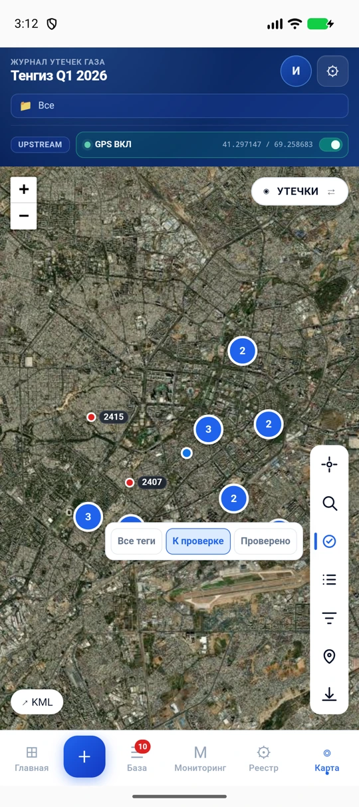
Рядом с маркером — номер бирки; близкие маркеры собираются в кластеры с числом записей. Нажатие на маркер показывает бирку, компонент, описание и статус.
Панель кнопок справа: моё местоположение, поиск по номеру бирки, фильтр по мониторингу, фильтр по статусу, фильтр по приоритету, утечки рядом и загрузка тайлов текущей области в офлайн-кэш. Кнопка KML выгружает видимые записи для Google Earth и ГИС.
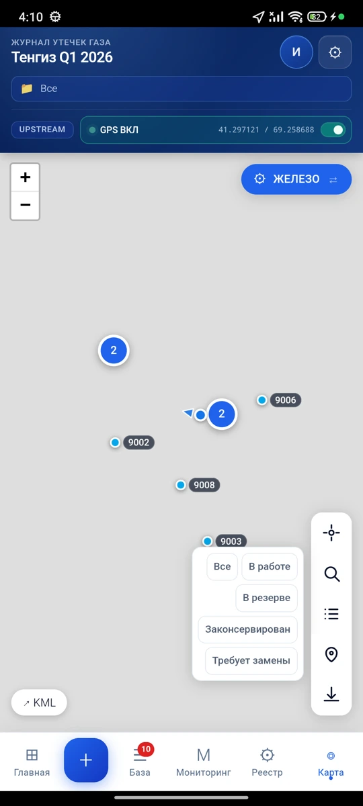
Если у проекта есть реестр, в правом верхнем углу стоит переключатель баз — «Утечки» или «Железо». Карта показывает по одной базе за раз, и кнопки меняются вместе с ней: на базе железа фильтры по статусу, приоритету и обходу пропадают — к оборудованию они не относятся, — а вместо них появляется отбор по состоянию железа. Он общий с реестром: отобранное там видно здесь, а снятое здесь снято и там. Круг «Рядом со мной» тоже общий. KML на этой базе выгружает компоненты.
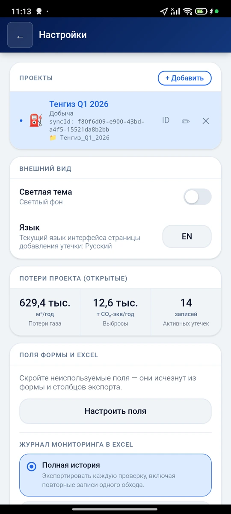
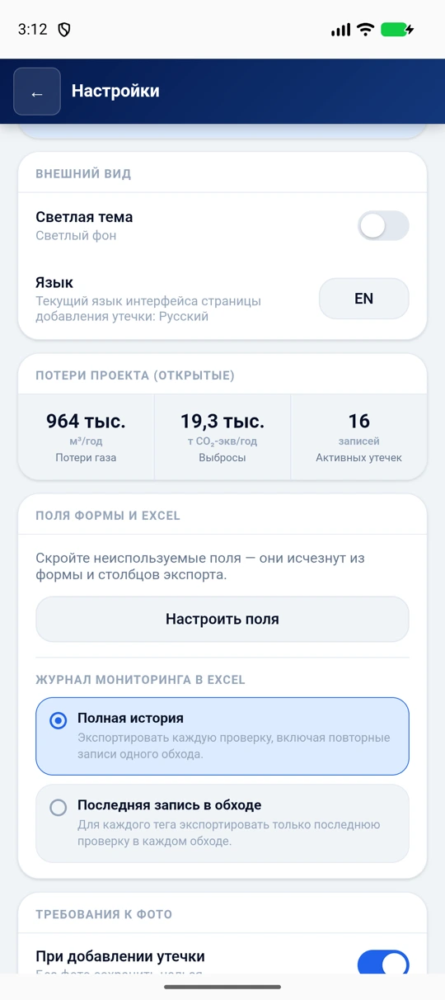
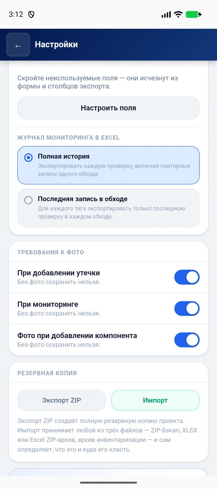
Переключение, переименование, удаление и создание проектов. Переключение сбрасывает незаконченную форму добавления утечки и очищает кэш карты. Рядом — блок «Внешний вид» и сводка «Потери проекта (открытые)»: годовые потери газа, выбросы CO₂-эквивалента и число активных утечек.
Блок разделён надвое — «Утечки» и «Реестр»; на телефоне одна часть стоит под другой. Кнопка «Настроить поля» скрывает неиспользуемые поля своей формы: они исчезают и из формы, и из столбцов выгрузки. Наборы раздельные — одноимённое поле можно оставить у утечки и убрать у карточки компонента.
Поля «№», «Дата обнаружения», «Статус» и «Дата устранения» системные: в списке их нет и скрыть их нельзя. Снимки тоже — ни у утечки, ни у карточки. Остальное в списке есть, а обязательное помечено.
Журнал мониторинга в Excel — «Полная история» (каждая проверка, включая повторные в одном обходе) или «Последняя запись в обходе» (по одной проверке на тег в каждом обходе).
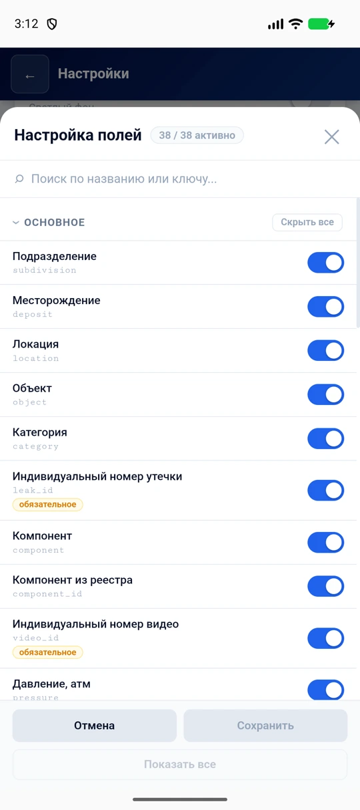
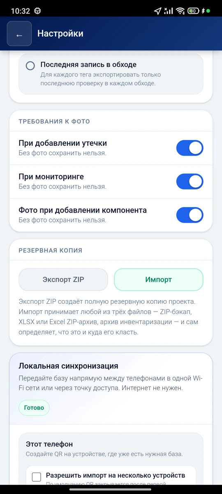
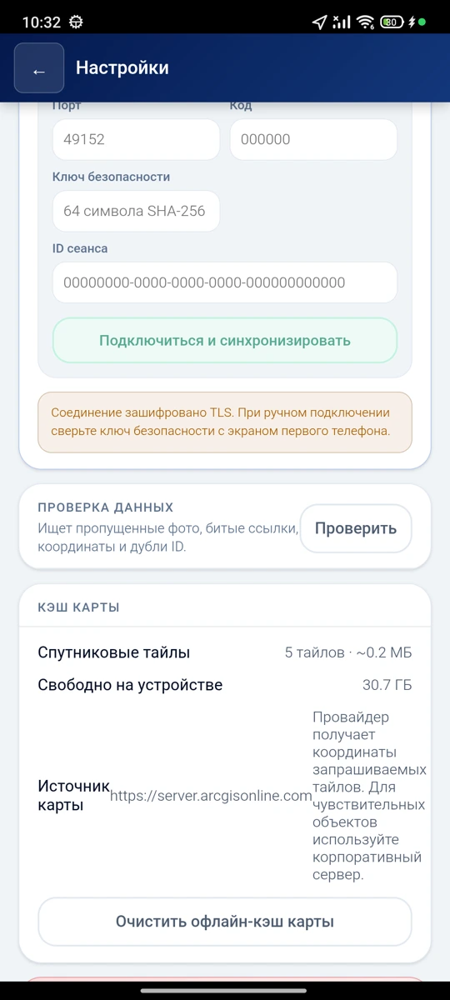
Отдельно для добавления утечки и для мониторинга: снимок обязателен или нет. Настройка учитывается и при проверке данных.
Ищет записи без фотографий (до, ремонта, после), проверки мониторинга без снимка, битые ссылки на файлы, записи без координат и повторяющиеся номера бирок.
Показаны число сохранённых тайлов, занятый объём и адрес источника карты; рядом кнопка очистки кэша. «Очистить базу данных» удаляет все записи активного проекта — необратимо, сначала сделайте экспорт ZIP.
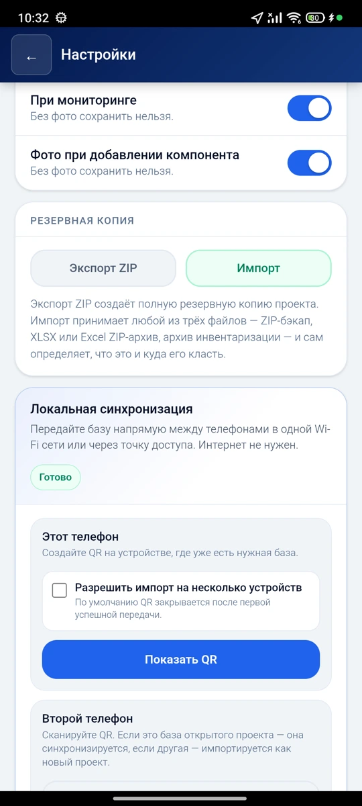
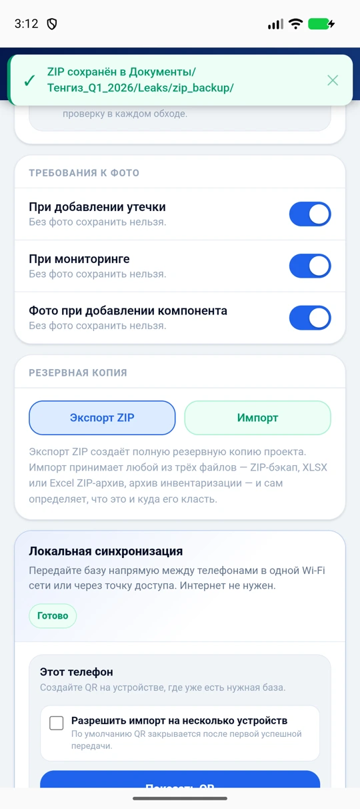
Экспорт ZIP собирает полную копию проекта: метаданные, все записи и все фотографии. На Android архив сохраняется в общую папку Документы, поэтому его видно из любого файлового менеджера и можно передать как обычный файл.
Повторная выгрузка заменяет прежний файл с тем же именем — «отчёт (1).zip» рядом больше не появляется, и в папке лежит та самая копия, которую приложение назвало на экране. Если имя занято файлом, записанным не приложением, оно скажет об этом, а не перезапишет чужое молча.
Кнопка «Импорт» принимает любой из трёх файлов — ZIP-копию проекта, книгу XLSX (или Excel-архив: книга плюс папка снимков) и архив инвентаризации. Что именно принесли, приложение определяет по содержимому файла, а не по тому, какую кнопку нажали: вспоминать, чем отличается отчёт от копии, не нужно.
ZIP-копия восстанавливает проект целиком. Если проект с тем же именем уже есть, приложение показывает сравнение и предлагает «Перезаписать», «Объединить» или «Создать копию». В сравнении показаны не только записи об утечках, но и отдельный блок «Реестр компонентов»: сколько карточек добавится, сколько обновится и сколько при них снимков.
Книга XLSX — в том числе выгруженная кнопкой XLSX из базы. Перед импортом показывается сводка: сколько строк найдено, сколько будет импортировано, сколько фотографий и сколько строк пропущено.
Архив инвентаризации вливает карточки компонентов в реестр текущего проекта. Правки, сделанные в книге, доходят до приложения: видимый лист ложится поверх служебного слепка, не стирая ни историю осмотров, ни снимки. Карточка, заполненная на площадке, важнее строки в таблице: если такой номер уже заведён на телефоне, строка не вливается, и о таких строках приложение сообщает отдельно.
Файл, который не удалось опознать, отклоняется с сообщением — вместо того чтобы разбираться неправильно.
Функция доступна только в Android-версии: базу можно передать напрямую между телефонами в одной Wi-Fi-сети или через точку доступа, без интернета.
Сеанс закрывается после первой успешной передачи, если заранее не разрешён импорт на несколько устройств. Проекты сверяются по внутреннему идентификатору, чтобы случайно не объединить разные базы.
| Что | Где |
|---|---|
| Записи утечек | внутреннее хранилище приложения (база SQLite); напрямую недоступно |
| Фотографии | внутреннее хранилище приложения, папка проекта |
| Экспорт ZIP и Excel | Документы/<название проекта>/ |
| Настройки и активный проект | внутреннее хранилище приложения |
Данные не покидают телефон: серверной части, облака и телеметрии у приложения нет. Единственный сетевой запрос — загрузка тайлов карты, и его можно отключить сборкой в офлайн-режиме.
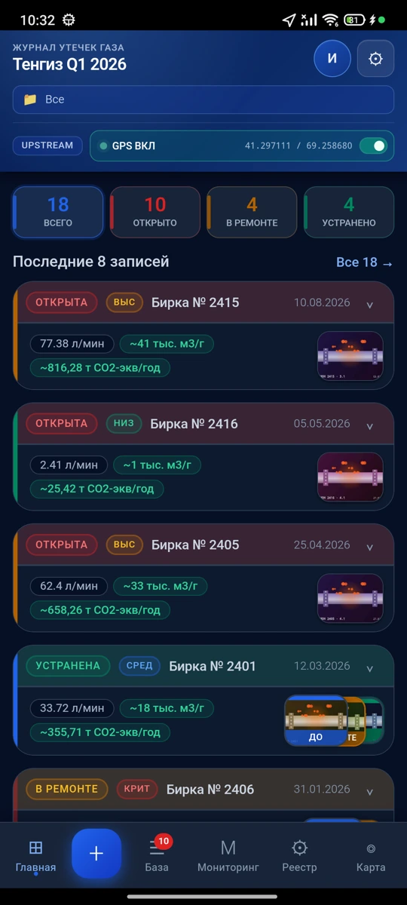
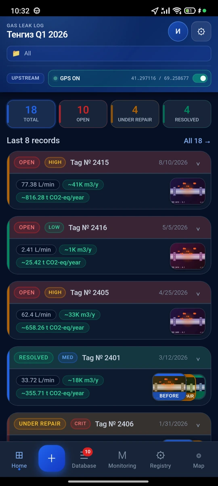
В настройках, блок «Внешний вид»: переключатель тёмной и светлой темы и кнопка языка (RU / EN). Оба выбора сохраняются между запусками.
| Разрешение | Зачем | Что будет без него |
|---|---|---|
| Местоположение | координаты утечек, фильтр «Рядом со мной», метка на карте | записи сохраняются без координат и не видны на карте |
| Камера | снимки утечки, ремонта, результата и обходов | снимок можно выбрать только из галереи; при обязательном фото запись не сохранится |
| Микрофон | голосовой ввод полей формы | поля заполняются вручную |
| Сеть | загрузка карты и передача базы по QR | карта показывает только сохранённые участки |
Разрешения запрашиваются в момент первого использования функции. Если разрешение было отклонено «навсегда», включить его можно в системных настройках телефона: Приложения → Leak Tracker → Разрешения.
Она сохранена без координат. Проверьте переключатель GPS в шапке и разрешение на местоположение, затем добавьте координаты через «Редактировать» в подробной карточке.
Три обычные причины: не заполнено имя в профиле, не указан серийный номер оборудования в параметрах расчёта или в проекте включено обязательное фото, а снимка нет. Точную причину показывает уведомление.
Номер бирки в проекте уникален. Найдите существующую запись поиском по номеру в базе.
Скорее всего действует область (кнопка пути в шапке) или фильтр статуса. Нажмите «Показать все» в выборе объекта и снимите фильтры.
Показываются только сохранённые участки. Скачайте нужный район кнопкой загрузки на карте, пока есть связь.
Экспорт ZIP → передать файл из папки «Документы» → импорт ZIP на втором телефоне. В одной сети быстрее через синхронизацию по QR.
Каждый проект — свой журнал. Вернитесь к нужному проекту в настройках.